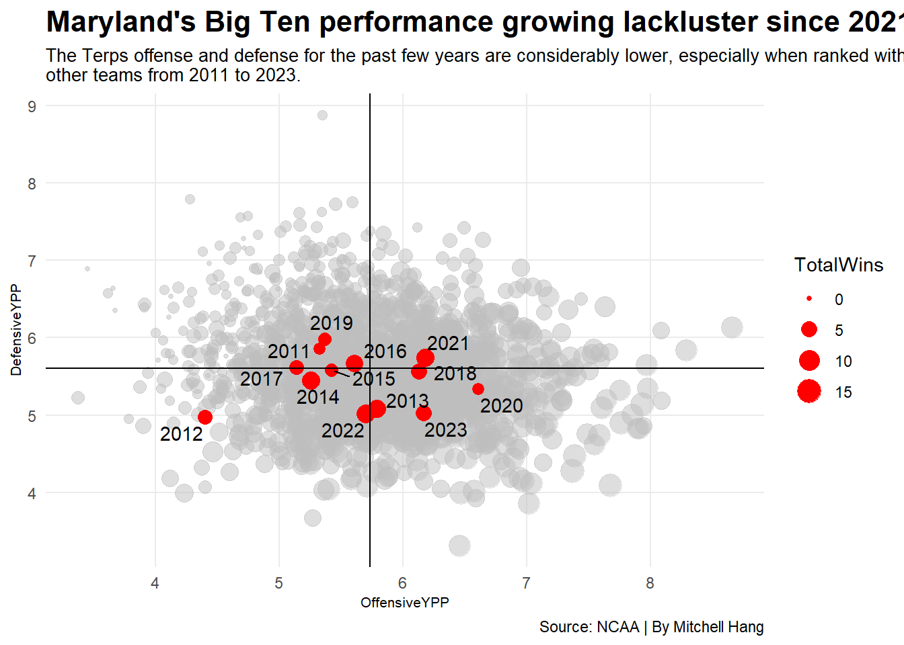

Code
library(tidyverse)
library(scales)
library(ggrepel)Here I am loading the necessary functions.
library(tidyverse)
library(scales)
library(ggrepel)Here I am loading the football logs.
logs <- read_csv("https://thescoop.org/sports-data-files/footballlogs1123.csv")Rows: 19934 Columns: 55
── Column specification ────────────────────────────────────────────────────────
Delimiter: ","
chr (8): HomeAway, Opponent, Result, TeamFull, TeamURL, Outcome, Team, Con...
dbl (46): Game, PassingCmp, PassingAtt, PassingPct, PassingYds, PassingTD, ...
date (1): Date
ℹ Use `spec()` to retrieve the full column specification for this data.
ℹ Specify the column types or set `show_col_types = FALSE` to quiet this message.Here I am counting the total number of wins per team.
winlosslogs <- logs |>
mutate(
wins = case_when(
grepl("W", Outcome) ~ 1,
grepl("L", Outcome) ~ 0)
)Here I am calculating the Total Offensive and Defensive Plays, Total Offensive and Defensive Yards, Total Wins, and Offensive and Defensive Yards Per Play.
winlosslogs |>
group_by(Team, Season) |>
summarise(
TotalPlays = sum(OffensivePlays),
TotalYards = sum(OffensiveYards),
DefensivePlays = sum(DefPlays),
DefensiveYards = sum(DefYards),
TotalWins = sum(wins)) |>
mutate(
OffensiveYPP = TotalYards/TotalPlays,
DefensiveYPP = DefensiveYards/DefensivePlays) -> ypp`summarise()` has grouped output by 'Team'. You can override using the
`.groups` argument.Here I am plotting the points showing Offensive and Defensive Yards Per Play for each team between the 2011 and 2023 seasons.
ggplot() +
geom_point(
data=ypp, aes(x=OffensiveYPP, y=DefensiveYPP)
)
Here I am making the size of the points based on Total Wins.
ggplot() +
geom_point(
data=ypp,
aes(x=OffensiveYPP, y=DefensiveYPP, size=TotalWins)
)Here I am making the points more transluscent and adding a scale showing the number of wins.
ggplot() +
geom_point(
data=ypp,
aes(x=OffensiveYPP, y=DefensiveYPP, size=TotalWins),
alpha = .3) +
scale_size(range = c(3, 8), name="Wins")Here I am filtering for the team of Maryland and highlighting their points in red.
maryland <- ypp |> filter(Team == "Maryland")
ggplot() +
geom_point(
data=ypp,
aes(x=OffensiveYPP, y=DefensiveYPP, size=TotalWins),
color="grey",
alpha=.5) +
geom_point(
data=maryland,
aes(x=OffensiveYPP, y=DefensiveYPP, size=TotalWins),
color="red")Here I am calculating the X and Y intercepts of the graph.
ypp |>
ungroup() |>
summarise(
offense = mean(OffensiveYPP),
defense = mean(DefensiveYPP)
)# A tibble: 1 × 2
offense defense
<dbl> <dbl>
1 5.73 5.61Here I am putting lines on the graph with the X and Y-intercept information.
ggplot() +
geom_point(
data=ypp,
aes(x=OffensiveYPP, y=DefensiveYPP, size=TotalWins),
color="grey",
alpha=.5) +
geom_point(
data=maryland,
aes(x=OffensiveYPP, y=DefensiveYPP, size=TotalWins),
color="red") +
geom_vline(xintercept = 5.734061) +
geom_hline(yintercept = 5.608837)Here I am adding labels for points representing the team of Maryland for each season.
ggplot() +
geom_point(
data=ypp,
aes(x=OffensiveYPP, y=DefensiveYPP, size=TotalWins),
color="grey",
alpha=.5) +
geom_point(
data=maryland,
aes(x=OffensiveYPP, y=DefensiveYPP, size=TotalWins),
color="red") +
geom_vline(xintercept = 5.734061) +
geom_hline(yintercept = 5.608837) +
geom_text_repel(
data=maryland,
aes(x=OffensiveYPP, y=DefensiveYPP, label=Season)
)Here I am adding a lede title and description to the graph.
ggplot() +
geom_point(
data=ypp,
aes(x=OffensiveYPP, y=DefensiveYPP, size=TotalWins),
color="grey",
alpha=.5) +
geom_point(
data=maryland,
aes(x=OffensiveYPP, y=DefensiveYPP, size=TotalWins),
color="red") +
geom_vline(xintercept = 5.734061) +
geom_hline(yintercept = 5.608837) +
geom_text_repel(
data=maryland,
aes(x=OffensiveYPP, y=DefensiveYPP, label=Season)
) +
labs(title="Maryland's Big Ten performance growing lackluster since 2021", subtitle="The Terps offense and defense for the past few years are considerably lower, especially when ranked with \nother teams from 2011 to 2023.", caption="Source: NCAA | By Mitchell Hang") + theme_minimal() +
theme(
plot.title = element_text(size = 16, face = "bold"),
axis.title = element_text(size = 8),
plot.subtitle = element_text(size=10),
panel.grid.minor = element_blank()
)
I think this is an interesting depiction on how Maryland’s Big Ten performance has changed over the years, because I was initially expecting some increase, but in actuality it’s often gone below the X-axis in recent years (i.e., after the start of the COVID-19 pandemic). It can be considered that 2021 was their best year since their Defensive and Offensive Yards per Play were above and to the right of their respective axes – they are in the so-called positive-positive quadrant (I) – whereas 2022 appears to be the worst in recent years as they are in the negative-negative quadrant (III). I don’t think there’s an easy way to signify that the 2023 data is incomplete, as we already have tons of data from other teams that have already blended in with one another, but maybe making the point for 2023 a darker color could be a potential solution.